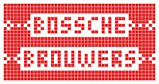
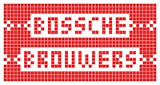

Animal Road
Rock 'n roll uit Vught!
- Dag
- vrijdag
- Begin
- 19:30
- Einde
- 20:30
- Soort
- Show
- Locatie
- Brouwers
Animal Road
Animal Road is een band met haar roots in de omgeving van Den Bosch. Deze band, bestaande uit een vijftal pilshunters voorziet de avond van een mooi gevarieerd programma. Het beste samen te vatten als poprock met een rauw randje. Met hun zomerse vibes, harmonieuze samenzang, stevig gitaarwerk en up-tempo nummers maakt Animal Road samen met het publiek van ieder optreden een feest. Met het speciaalbier van de Bossche Brouwers moet dus helemaal goed komen ;-)
Deze jongens willen mensen vermaken met hun muziek. Voor ieder wat wils is het motto. Zo zijn er nummers die uit de Rock ‘n Roll rollen (Downtown Dolly), maar ook nummers die rechtstreeks uit de Singer-Songwriters pen komen (Jack Shit!). Zo blijft ieder optreden (en hun Spotify lijst) lekker fris en afwisselend voor iedereen die zijn/haar oor eraan wil lenen.


 Brouwers

Brouwers

Bij de Bossche Brouwers aan de Vaart gaat het er niet alleen tijdens RAUWKOST, maar het gehele jaar rauw aan toe. Vier bierfanaten startten een kroeg met een eigen bierbrouwerij, waar wekelijks bandjes kunnen spelen. Zing, mosh, huil, pit, lach, drink en bewonder!